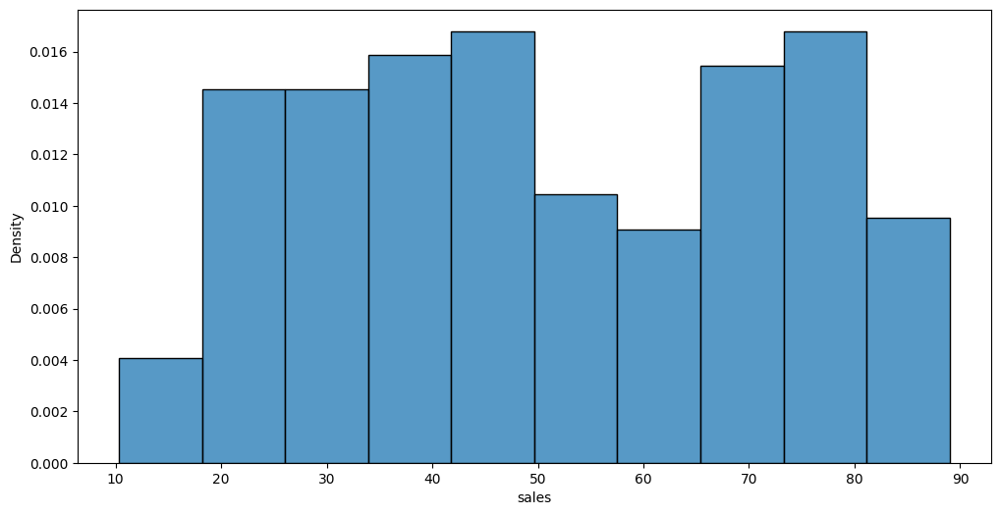
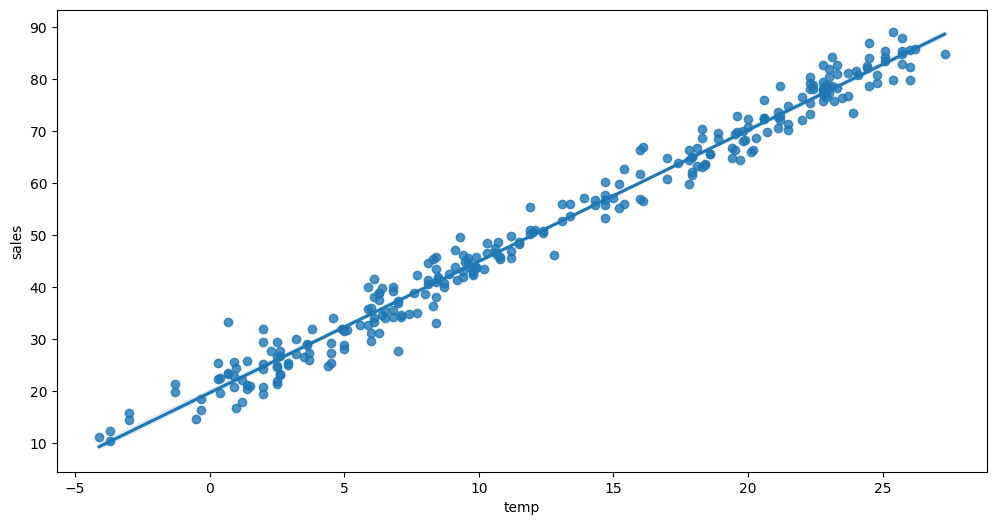
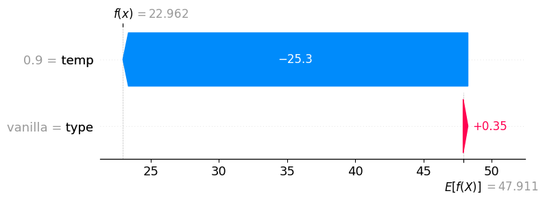

#!pip install autogluon.eda13wk-51: 아이스크림(type무의미) / 자료분석(Autogluon)
1. 강의영상
2. Imports
import numpy as np
import pandas as pd
import matplotlib.pyplot as plt
import seaborn as sns
#---#
from autogluon.tabular import TabularPredictor
import autogluon.eda.auto as auto
#---#
import warnings
warnings.filterwarnings('ignore')3. Data
df_train = pd.read_csv('https://raw.githubusercontent.com/guebin/MP2023/main/posts/mid/icesales_train.csv')df_train.head()| temp | type | sales | |
|---|---|---|---|
| 0 | 19.4 | choco | 64.807407 |
| 1 | 0.9 | vanilla | 25.656697 |
| 2 | 7.4 | vanilla | 34.756650 |
| 3 | 4.5 | choco | 27.265442 |
| 4 | 21.1 | choco | 70.606946 |
sns.scatterplot(df_train,x='temp',y='sales',hue='type')
4. 적합
# step1 -- pass
# step2
predictr = TabularPredictor(label='sales')
# step3
predictr.fit(df_train)
# step4
yhat = predictr.predict(df_train)No path specified. Models will be saved in: "AutogluonModels/ag-20231201_105859/"
Beginning AutoGluon training ...
AutoGluon will save models to "AutogluonModels/ag-20231201_105859/"
AutoGluon Version: 0.8.2
Python Version: 3.10.13
Operating System: Linux
Platform Machine: x86_64
Platform Version: #26~22.04.1-Ubuntu SMP PREEMPT_DYNAMIC Thu Jul 13 16:27:29 UTC 2
Disk Space Avail: 248.43 GB / 490.57 GB (50.6%)
Train Data Rows: 280
Train Data Columns: 2
Label Column: sales
Preprocessing data ...
AutoGluon infers your prediction problem is: 'regression' (because dtype of label-column == float and many unique label-values observed).
Label info (max, min, mean, stddev): (88.99437629756306, 10.335207096486446, 51.10189, 21.16757)
If 'regression' is not the correct problem_type, please manually specify the problem_type parameter during predictor init (You may specify problem_type as one of: ['binary', 'multiclass', 'regression'])
Using Feature Generators to preprocess the data ...
Fitting AutoMLPipelineFeatureGenerator...
Available Memory: 126321.75 MB
Train Data (Original) Memory Usage: 0.02 MB (0.0% of available memory)
Inferring data type of each feature based on column values. Set feature_metadata_in to manually specify special dtypes of the features.
Stage 1 Generators:
Fitting AsTypeFeatureGenerator...
Note: Converting 1 features to boolean dtype as they only contain 2 unique values.
Stage 2 Generators:
Fitting FillNaFeatureGenerator...
Stage 3 Generators:
Fitting IdentityFeatureGenerator...
Stage 4 Generators:
Fitting DropUniqueFeatureGenerator...
Stage 5 Generators:
Fitting DropDuplicatesFeatureGenerator...
Types of features in original data (raw dtype, special dtypes):
('float', []) : 1 | ['temp']
('object', []) : 1 | ['type']
Types of features in processed data (raw dtype, special dtypes):
('float', []) : 1 | ['temp']
('int', ['bool']) : 1 | ['type']
0.0s = Fit runtime
2 features in original data used to generate 2 features in processed data.
Train Data (Processed) Memory Usage: 0.0 MB (0.0% of available memory)
Data preprocessing and feature engineering runtime = 0.02s ...
AutoGluon will gauge predictive performance using evaluation metric: 'root_mean_squared_error'
This metric's sign has been flipped to adhere to being higher_is_better. The metric score can be multiplied by -1 to get the metric value.
To change this, specify the eval_metric parameter of Predictor()
Automatically generating train/validation split with holdout_frac=0.2, Train Rows: 224, Val Rows: 56
User-specified model hyperparameters to be fit:
{
'NN_TORCH': {},
'GBM': [{'extra_trees': True, 'ag_args': {'name_suffix': 'XT'}}, {}, 'GBMLarge'],
'CAT': {},
'XGB': {},
'FASTAI': {},
'RF': [{'criterion': 'gini', 'ag_args': {'name_suffix': 'Gini', 'problem_types': ['binary', 'multiclass']}}, {'criterion': 'entropy', 'ag_args': {'name_suffix': 'Entr', 'problem_types': ['binary', 'multiclass']}}, {'criterion': 'squared_error', 'ag_args': {'name_suffix': 'MSE', 'problem_types': ['regression', 'quantile']}}],
'XT': [{'criterion': 'gini', 'ag_args': {'name_suffix': 'Gini', 'problem_types': ['binary', 'multiclass']}}, {'criterion': 'entropy', 'ag_args': {'name_suffix': 'Entr', 'problem_types': ['binary', 'multiclass']}}, {'criterion': 'squared_error', 'ag_args': {'name_suffix': 'MSE', 'problem_types': ['regression', 'quantile']}}],
'KNN': [{'weights': 'uniform', 'ag_args': {'name_suffix': 'Unif'}}, {'weights': 'distance', 'ag_args': {'name_suffix': 'Dist'}}],
}
Fitting 11 L1 models ...
Fitting model: KNeighborsUnif ...
-2.7316 = Validation score (-root_mean_squared_error)
0.01s = Training runtime
0.02s = Validation runtime
Fitting model: KNeighborsDist ...
-3.5558 = Validation score (-root_mean_squared_error)
0.01s = Training runtime
0.01s = Validation runtime
Fitting model: LightGBMXT ...
-3.1036 = Validation score (-root_mean_squared_error)
0.4s = Training runtime
0.0s = Validation runtime
Fitting model: LightGBM ...
-3.0864 = Validation score (-root_mean_squared_error)
0.18s = Training runtime
0.0s = Validation runtime
Fitting model: RandomForestMSE ...
-2.9027 = Validation score (-root_mean_squared_error)
0.27s = Training runtime
0.04s = Validation runtime
Fitting model: CatBoost ...
-2.7878 = Validation score (-root_mean_squared_error)
0.28s = Training runtime
0.0s = Validation runtime
Fitting model: ExtraTreesMSE ...
-2.88 = Validation score (-root_mean_squared_error)
0.39s = Training runtime
0.03s = Validation runtime
Fitting model: NeuralNetFastAI ...
-2.6541 = Validation score (-root_mean_squared_error)
2.25s = Training runtime
0.01s = Validation runtime
Fitting model: XGBoost ...
-3.061 = Validation score (-root_mean_squared_error)
0.11s = Training runtime
0.0s = Validation runtime
Fitting model: NeuralNetTorch ...
-2.6146 = Validation score (-root_mean_squared_error)
1.91s = Training runtime
0.01s = Validation runtime
Fitting model: LightGBMLarge ...
-2.9062 = Validation score (-root_mean_squared_error)
0.25s = Training runtime
0.0s = Validation runtime
Fitting model: WeightedEnsemble_L2 ...
-2.5554 = Validation score (-root_mean_squared_error)
0.23s = Training runtime
0.0s = Validation runtime
AutoGluon training complete, total runtime = 6.52s ... Best model: "WeightedEnsemble_L2"
TabularPredictor saved. To load, use: predictor = TabularPredictor.load("AutogluonModels/ag-20231201_105859/")[1000] valid_set's rmse: 3.11194sns.scatterplot(df_train,x='temp',y='sales',hue='type',alpha=0.3)
sns.lineplot(df_train,x='temp',y=yhat,hue='type')
predictr.leaderboard(silent=True)| model | score_val | pred_time_val | fit_time | pred_time_val_marginal | fit_time_marginal | stack_level | can_infer | fit_order | |
|---|---|---|---|---|---|---|---|---|---|
| 0 | WeightedEnsemble_L2 | -2.555379 | 0.067882 | 4.665440 | 0.000242 | 0.226336 | 2 | True | 12 |
| 1 | NeuralNetTorch | -2.614644 | 0.007492 | 1.911196 | 0.007492 | 1.911196 | 1 | True | 10 |
| 2 | NeuralNetFastAI | -2.654070 | 0.007698 | 2.245980 | 0.007698 | 2.245980 | 1 | True | 8 |
| 3 | KNeighborsUnif | -2.731556 | 0.017128 | 0.009127 | 0.017128 | 0.009127 | 1 | True | 1 |
| 4 | CatBoost | -2.787790 | 0.000878 | 0.278754 | 0.000878 | 0.278754 | 1 | True | 6 |
| 5 | ExtraTreesMSE | -2.879997 | 0.025122 | 0.387946 | 0.025122 | 0.387946 | 1 | True | 7 |
| 6 | RandomForestMSE | -2.902703 | 0.035322 | 0.272800 | 0.035322 | 0.272800 | 1 | True | 5 |
| 7 | LightGBMLarge | -2.906174 | 0.000696 | 0.253458 | 0.000696 | 0.253458 | 1 | True | 11 |
| 8 | XGBoost | -3.061021 | 0.001687 | 0.114215 | 0.001687 | 0.114215 | 1 | True | 9 |
| 9 | LightGBM | -3.086423 | 0.000693 | 0.181278 | 0.000693 | 0.181278 | 1 | True | 4 |
| 10 | LightGBMXT | -3.103597 | 0.000973 | 0.395612 | 0.000973 | 0.395612 | 1 | True | 3 |
| 11 | KNeighborsDist | -3.555839 | 0.013983 | 0.005915 | 0.013983 | 0.005915 | 1 | True | 2 |
5. 해석 및 시각화
A. y의 분포, (X,y)의 관계 시각화
auto.target_analysis(
train_data=df_train,
label='sales',
fit_distributions=False
)Target variable analysis
| count | mean | std | min | 25% | 50% | 75% | max | dtypes | unique | missing_count | missing_ratio | raw_type | special_types | |
|---|---|---|---|---|---|---|---|---|---|---|---|---|---|---|
| sales | 280 | 51.101886 | 21.167573 | 10.335207 | 33.053077 | 47.844021 | 70.451589 | 88.994376 | float64 | 280 | float |

Target variable correlations
train_data - spearman correlation matrix; focus: absolute correlation for sales >= 0.5

Feature interaction between temp/sales in train_data

B. 중요한 설명변수
auto.quick_fit(
train_data=df_train,
label='sales',
show_feature_importance_barplots=True
)No path specified. Models will be saved in: "AutogluonModels/ag-20231201_110230/"Model Prediction for sales
Using validation data for Test points

Model Leaderboard
| model | score_test | score_val | pred_time_test | pred_time_val | fit_time | pred_time_test_marginal | pred_time_val_marginal | fit_time_marginal | stack_level | can_infer | fit_order | |
|---|---|---|---|---|---|---|---|---|---|---|---|---|
| 0 | LightGBMXT | -3.549018 | -4.206044 | 0.001961 | 0.000846 | 0.218935 | 0.001961 | 0.000846 | 0.218935 | 1 | True | 1 |
Feature Importance for Trained Model
| importance | stddev | p_value | n | p99_high | p99_low | |
|---|---|---|---|---|---|---|
| temp | 25.164809 | 1.617020 | 0.000002 | 5 | 28.494276 | 21.835342 |
| type | -0.048470 | 0.059119 | 0.929654 | 5 | 0.073258 | -0.170197 |

Rows with the highest prediction error
Rows in this category worth inspecting for the causes of the error
| temp | type | sales | sales_pred | error | |
|---|---|---|---|---|---|
| 73 | -3.7 | vanilla | 12.432354 | 24.724379 | 12.292025 |
| 191 | -0.3 | vanilla | 16.436525 | 24.724379 | 8.287854 |
| 218 | 14.7 | choco | 60.178468 | 52.961044 | 7.217424 |
| 166 | 16.1 | choco | 66.821367 | 59.932861 | 6.888506 |
| 5 | 23.2 | vanilla | 75.697957 | 82.155197 | 6.457240 |
| 118 | 8.3 | choco | 45.364110 | 38.923119 | 6.440991 |
| 198 | 4.4 | vanilla | 24.924572 | 31.039103 | 6.114530 |
| 7 | 11.2 | choco | 45.593168 | 51.416027 | 5.822859 |
| 89 | 25.7 | vanilla | 87.788320 | 82.155197 | 5.633123 |
| 109 | 2.0 | vanilla | 19.398204 | 24.724379 | 5.326174 |
C. 관측치별 해석
auto.explain_rows(
train_data=df_train,
model=predictr,
rows=df_train.iloc[[0]],
display_rows=True,
plot='waterfall'
) | temp | type | sales | |
|---|---|---|---|
| 0 | 19.4 | choco | 64.807407 |

auto.explain_rows(
train_data=df_train,
model=predictr,
rows=df_train.iloc[[1]],
display_rows=True,
plot='waterfall'
) | temp | type | sales | |
|---|---|---|---|
| 1 | 0.9 | vanilla | 25.656697 |